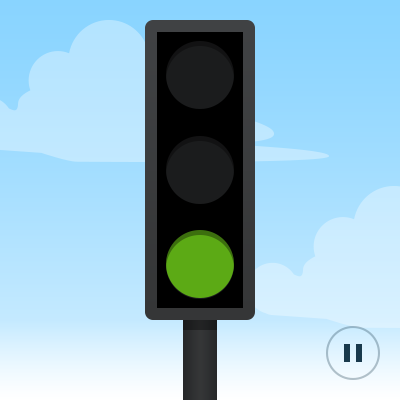

SCXML Traffic Light (Simple, QML)
A Qt Quick application that uses a compiled state machine to implement a simplified traffic light.

Traffic Light demonstrates how to connect to the active properties of a state in a state machine that is compiled to a class.
The UI is created using Qt Quick.
Running the Example
To run the example from Qt Creator, open the Welcome mode and select the example from Examples. For more information, visit Building and Running an Example.
Compiling the State Machine
We link against the Qt SCXML module by adding the following lines to the example's build files.
.pro when using qmake:
QT += qml scxml
We then specify the state machine to compile:
STATECHARTS = ../trafficlight-common/statemachine.scxml
CMakeLists.txt when using cmake:
find_package(Qt6 REQUIRED COMPONENTS Core Gui Qml Scxml)
target_link_libraries(trafficlight-qml-static PRIVATE
Qt6::Core
Qt6::Gui
Qt6::Qml
Qt6::Scxml
)
We then specify the state machine to compile:
qt6_add_statecharts(trafficlight-qml-static
../trafficlight-common/statemachine.scxml
)
The statechart directives STATECHARTS or qt6_add_statecharts invoke the Qt SCXML Compiler, qscxmlc, which is run automatically to generate statemachine.h and statemachine.cpp, which are then added appropriately as headers and sources for compilation.
Instantiating the State Machine
We instantiate the state machine as follows:
TrafficLightStateMachine {
id: stateMachine
running: true
}
Connecting to States
In the SCXML file, we specify states for each light: red, yellow, and green. In the <onentry> element, we specify the event to send when entering the state and the delay in seconds before sending the event. In the <transition> element, we specify the event that triggers the transition to the state specified by the target attribute:
<state id="red">
<onentry>
<send event="startGoingGreen" delay="3s"/>
</onentry>
<transition event="startGoingGreen" target="redGoingGreen"/>
</state>
<state id="yellow" initial="greenGoingRed">
<state id="redGoingGreen">
<onentry>
<send event="goGreen" delay="1s"/>
</onentry>
<transition event="goGreen" target="green"/>
</state>
<state id="greenGoingRed">
<onentry>
<send event="goRed" delay="1s"/>
</onentry>
<transition event="goRed" target="red"/>
</state>
</state>
<state id="green">
<onentry>
<send event="startGoingRed" delay="3s"/>
</onentry>
<transition event="startGoingRed" target="greenGoingRed"/>
</state>
We connect to the states as follows:
Light {
anchors.top: parent.top
anchors.horizontalCenter: parent.horizontalCenter
color: "red"
visible: stateMachine.red || stateMachine.redGoingGreen
}
Light {
anchors.centerIn: parent
color: "yellow"
visible: stateMachine.yellow || stateMachine.blinking
}
Light {
anchors.bottom: parent.bottom
anchors.horizontalCenter: parent.horizontalCenter
color: "green"
visible: stateMachine.green
}
}